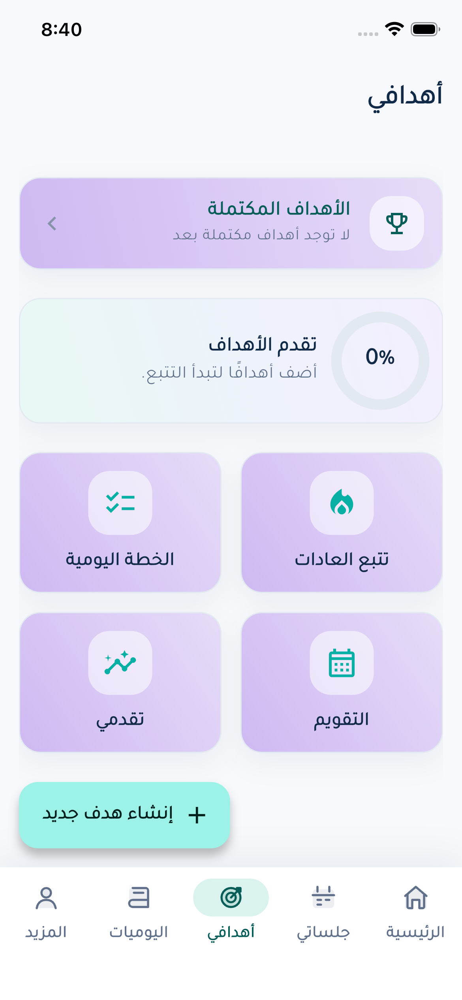

Find your starting point
Explore as a guest, discover coaches by name or specialty, and browse coach profiles. Booking, sessions and chat interfaces depend on configured services.
An Arabic-first personal-growth and life-coaching app connecting coach discovery, goals, daily habits, journaling and progress in one Flutter experience.



Screens from the app experienceDesigned and developed Etzan: the Flutter interface, feature journeys, shared design system, Arabic/English layouts and Supabase client integrations.
Explore as a guest, discover coaches by name or specialty, and browse coach profiles. Booking, sessions and chat interfaces depend on configured services.
Create goals and milestones, track habits and organize a daily plan with calendar views.
Journal, select a mood and review personal progress alongside profile and achievement views.
A shared design system supports Arabic/English localization, RTL/LTR layouts, adaptive navigation and light/dark settings.
Features share core UI and infrastructure. Auth, Dashboard and Notifications use presentation/domain/data layers, repositories, use cases, Cubit and dependency injection; other journeys use a shared backend repository.
The mobile implementation connects to Supabase. Account flows require configured tables, RPCs, storage buckets and access policies; the repository includes supporting SQL and backend notes, rather than a complete database bootstrap. Mapper, widget and smoke-test sources are available for review.
Scroll to explore. Select a screen to open the full view.
The public repository provides implementation and engineering evidence. Project information reviewed October 8, 2026.